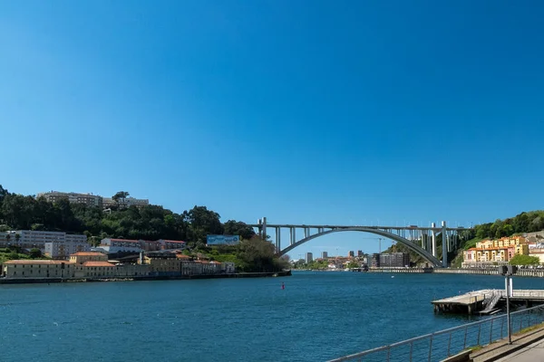
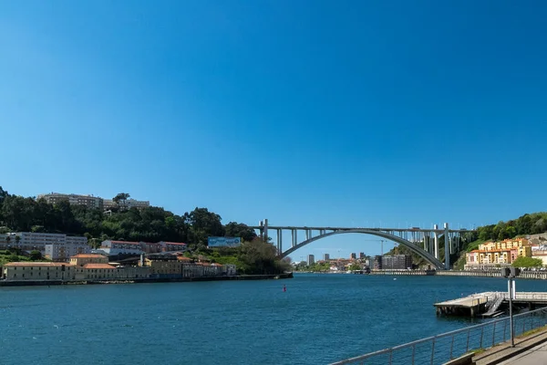

Multimédia
Fotografias

Video
Poema
Porto, Cidade de Luz e Mar
No alto das colinas, sob o céu sem fim,
Ergue-se o Porto, de pedra e jardim.
Ruas estreitas, de alma a pulsar,
Onde o rio Douro encontra o mar.
Nas margens tranquilas, a história se espalha,
Em cada azulejo, em cada muralha.
O Vinho do Porto, doce tradição,
Brinda os sonhos, aquece o coração.
Pontes que abraçam o céu e o rio,
Com ares de lenda, com força e brio.
A Ribeira encanta, em cores se veste,
No Porto, o passado jamais se esquece.
Cidade de trabalho, de luta e calor,
Nos rostos que cruzam, se sente o valor.
Aqui o vento traz histórias antigas,
E o futuro floresce em novas vidas.
Oh, Porto querido, de luz e verdade,
És mais que cidade, és liberdade.
Entre o rio e o oceano, sempre a brilhar,
És eterna saudade, és porto de amar.